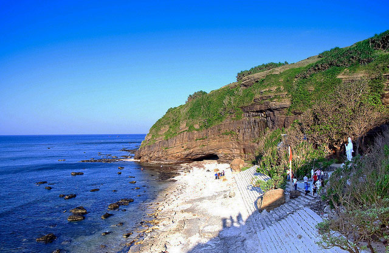

HELLO, IT'S NICE TO MEET YOU

Quảng Ngãi là một tỉnh ven biển nằm ở phía bắc vùng Duyên hải Nam Trung Bộ, miền Trung Việt Nam. Tỉnh Quảng Ngãi bao gồm 1 thành phố trực thuộc (Quảng Ngãi),
1 thị xã (Đức Phổ) và 11 huyện, trong đó có 1 huyện đảo (Lý Sơn), 5 huyện đồng bằng,
5 huyện miền núi. Các huyện của Quảng Ngãi gồm: Ba Tơ, Bình Sơn, Minh Long, Mộ Đức, Nghĩa Hành, Sơn Hà, Sơn Tây, Sơn Tịnh, Trà Bồng, Tư Nghĩa.
Quảng Ngãi là vùng đất có bề dày lịch sử với nền văn hoá lâu đời như khu du lịch văn hoá Sa Huỳnh, dấu vết văn hoá cổ xưa như thành cổ Châu Sa, Gò Vàng…,
có di tích lịch sử Ba Tơ, Sơn Mỹ, Ba Gia, Trà Bồng, Vạn Tường, nhiều cảnh đẹp như Thiên Ấn Niêm Hà, Thiên Bút Phê Vân, Thạch Bích Tà Dương, Cổ Luỹ Cô Thôn, Nước Trong
- Cà Đam…, nhiều bãi biển như Mỹ Khê, Sa Huỳnh,…
những tiềm năng trên là điều kiện để phát triển du lịch nghỉ dưỡng với nhiều loại hình, sản phẩm du lịch đa dạng.
Khi du khách đặt chân đến du lịch vùng đất Quảng Ngãi, bạn sẽ phải bất ngờ với những đặc sản phong phú và vô cùng hấp dẫn tại đây.
Địa danh này còn được biết đến với cái tên “vùng đất núi Ấn sông Trà” hình thành từ trong dòng chảy của con sông, địa hình của rừng núi bạt ngàn đã mang những sản vật,
những món ăn dân dã thân quen của người dân tại đây. Ẩm thực Quảng Ngãi đơn sơ, mộc mạc, tận dụng từ nguồn thiên nhiên có sẵn khiến nơi đây hấp dẫn hơn bao giờ hết.
Chỉ cần một lần đặt chân đến mảnh đất Quảng Ngãi, mọi du khách đều sẽ bị mê hoặc bởi thiên nhiên núi rừng hùng vĩ, con người thân thiện và nhiều món ăn hấp dẫn.
Và điều mà nhiều du khách cảm thấy tò mò nhất chắc hẳn là đặc sản Quảng Ngãi phải không nào? Vậy vùng đất này có những món ăn nào có thể khiến du khách hấp dẫn đến như vậy!
Hãy để VN Foods giúp bạn hiểu hơn về văn hoá ẩm thực nơi đây nhé!